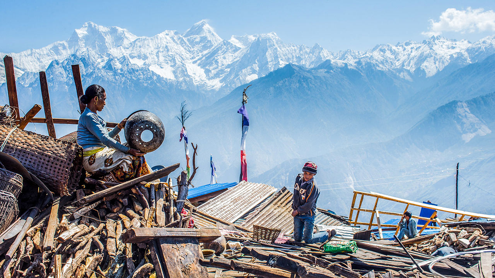
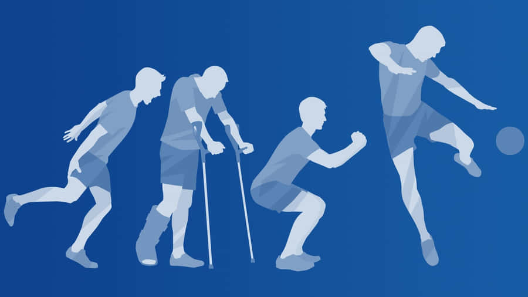

Disaster response
Earthquake Damage Prediction
Comparing tree-based models and an ensemble to classify building damage after the Nepal earthquake.
Explore projectThe project collection
A closer look at my work in machine learning, deep learning, quantum security and software systems.
Showing all 7 projects.
01 / ML projects
Classification, model comparison and validation across three application areas.

Disaster response
Comparing tree-based models and an ensemble to classify building damage after the Nepal earthquake.
Explore project
Bachelor's thesis
A comparative study of supervised learning models for recognising rehabilitation exercises from movement data.
Explore projectMedical data
A manual K-nearest neighbours implementation for benign versus malignant cell classification.
Explore project02 / DL projects
Sequence modelling for photovoltaic power forecasting with weather covariates.
Deep learning
An encoder-decoder LSTM predicts photovoltaic power using historical production, solar features and weather covariates.
Explore project03 / QKD software emulator
My master's thesis: an observable BB84 simulation, from channel events to final key availability.
Master's thesis
An eight-microservice simulation platform for exploring how loss, noise and interception affect a BB84 session.
Explore project04 / Software & AI systems
Agents, service integration, real-time applications and software testing.
Distributed systems
A conversational requirements-analysis agent integrated with six services, metrics, dashboards and availability alerts.
Explore projectPersonal project
A card game for 2-8 players, combining real-time communication, persistence, authentication and automated tests.
Explore project